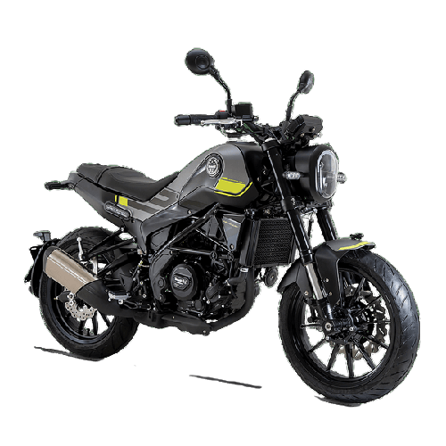
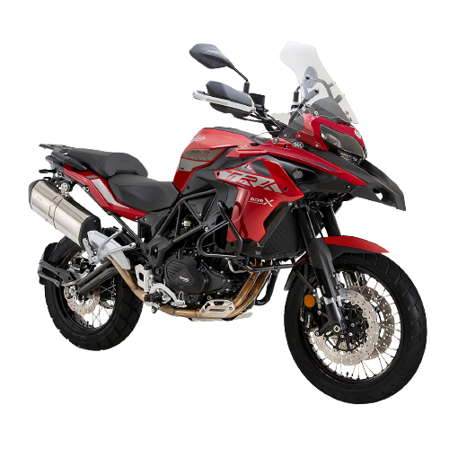

Pura pasión desde 1911

Seis hermanos y una historia. Seis hombres para convertir una realidad en una leyenda. Fue en la primavera de 1911, cuando Teresa Benelli, viuda, invirtió todo el capital de su familia para establecer un taller y asegurar un trabajo estable para sus seis hijos: Giuseppe, Giovanni, Filippo, Francesco, Domenico y Antonio Tonino Benelli.
CONSEGUÍ TU BENELLI AL MEJOR PRECIO
Benelli 180S


Benelli Leoncino 250


Benelli TRK 502X



Benelli 752S